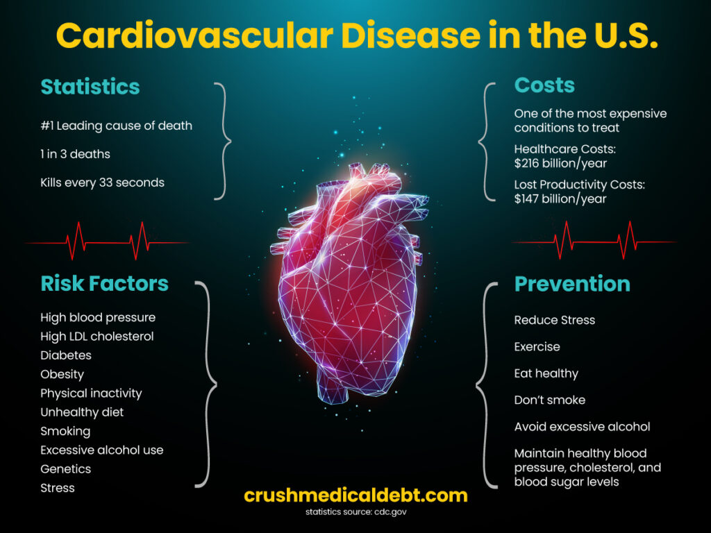

Cardiovascular disease is the #1 killer of men and women in the U.S., accounting for 1 in 3 deaths, and claiming a life every 33 seconds. More than 877,500 Americans die of heart disease, stroke, or other cardiovascular diseases every year. However, as shocking as the statistics are, what’s more outrageous is the sticker price! Cardiovascular disease is one of the most expensive conditions to treat, and the burden of these costs could make you sicker – physically, mentally, and financially.
The High Cost of Cardiovascular Disease
Even with insurance, out-of-pocket costs for healthcare services, tests, medicines, and missed work exponentially increase your risk for medical debt. Cost-sharing, provider networks, and confusing billing practices can all lead to medical bill problems. These problems with medical bills can have lasting impacts on your standard of living, health and well-being, financial stability, and ability to access needed healthcare.
The National Institute of Health describes the negative effects of the economic burden of seeking medical care as “financial toxicity.” Originally used in the context of cancer patients, it is now associated with many chronic and serious diseases. The consequences of financial toxicity are often as serious for the insured as they are for the uninsured.
Some examples:
- Debt and its potential effect on credit, housing, and job opportunities
- Lost income due to time off seeking healthcare
- Job loss and career derailment
- Bankruptcy – medical bills are the #1 cause of bankruptcy in the U.S.
- Anxiety and depression from financial stress
- Skipping necessary medical care or medicines due to costs
- Consumer debt from indirect costs such as transportation, meals, and lodging when seeking care away from home
- Inability to pay for basic needs
- Homelessness
- Inability to access necessary healthcare services
- Increased mortality
Prevention is Your Most Powerful Weapon
An ounce of prevention is worth a pound of cure. So, know the risk factors for cardiovascular disease and make changes to reduce them. It’s general knowledge that we need to exercise, eat healthy, and don’t drink in excess or smoke. But, do you know your blood sugar, blood pressure, and cholesterol levels?
These tests are usually covered as preventive care with no out-of-pocket costs if you have ACA-compliant health insurance. You can get these tests even if uninsured at most retail health clinics, Direct Primary Care (DPC) clinics, and Community Health Centers. You can also purchase these tests and a blood pressure cuff for home use without insurance or a doctor’s prescription.
Depending on your test results, you may need to work with your healthcare providers to reduce your risks. Alternatively, the worse your health gets the more expensive it will be to treat.
Don’t Neglect Your Mental Health
If diagnosed with cardiovascular disease or any other serious disease, managing the stress resulting from illness and financial toxicity can’t be understated. Joining support groups (online or in-person), accessing mental health services, or having a friend to confide in can be crucial for those suffering from chronic pain or illness.
Apply for Financial Assistance and Federal Healthcare Programs
Non-profit hospitals and medical centers, and even some for-profit providers, offer means-based charity care for qualifying patients. These are usually income-based or sliding-scale discounts. The IRS refers to charity care as financial assistance – required by federal law in exchange for certain tax privileges. However, many facilities may refer you to medical credit cards or care cards if you ask for financial assistance. Since credit card debt will only make your financial situation worse, make sure to ask for an application for charity care. You can also use Dollar For, a tool that helps you apply for financial assistance from your hospital for free.
In our article, What If I Can’t Afford Health Insurance? you can learn more about charity care, health programs for people with low incomes, and how to apply for federally subsidized healthcare programs such as Medicaid.
Shop Around for Healthcare Services
Especially if you are uninsured, you need to become a savvy shopper. Price variations can be in the hundreds, thousands, or even twenty thousand! For example, prices for a PCI (percutaneous coronary intervention), a procedure to reopen narrowed heart arteries, vary from $657 to $25 521!
Get a “good faith estimate” of expected charges if uninsured or not filing an insurance claim. If insured, request an “advance explanation of benefits” from your insurance plan for scheduled procedures. Learn about price transparency laws, how to obtain estimates, and what to ask for in our article, How Price Transparency Helps Reduce Out-Of-Pocket Costs.
If you’re insured and healthy but have a family history of heart disease and common risk factors, consider purchasing supplemental insurance to help cover costs left behind by your insurance coverage. If you don’t have health insurance, consider buying a supplemental insurance policy to improve your financial security from crushing medical costs.
Fight the System with Medical Financial Literacy and Crush Medical Debt
The system is broken, healthcare is unaffordable for most people, and insurance is like a bandaid on a hemorrhaging wound. This is why medical financial literacy is so important. Read more about how to fight the system in our article, Financial Literacy and Medical Bills.
As a leader in medical financial literacy, Crush Medical Debt teaches health insurance literacy, how to navigate and negotiate medical bills, how to Crush your Medical Bills in 3 Steps, and more. By following these tips and resources, you can protect yourself from becoming a healthcare cost victim and save your financial life.
Main Points
- Reduce risks to your cardiovascular health through lifestyle changes.
- Don’t neglect your mental health, especially when dealing with serious illness and financial toxicity.
- Apply for income-based financial assistance.
- Get a “good faith estimate” of expected charges for an item or service if you do not have insurance or if you plan to self-pay without filing an insurance claim.
- If insured, request an “advance explanation of benefits” from your insurance plan.
- Consider a supplemental insurance policy to cover unaffordable costs and improve your financial security.
- Follow Crush Medical Debt to learn more about medical financial literacy.
#hearthealthmonth #cardiovasculardisease